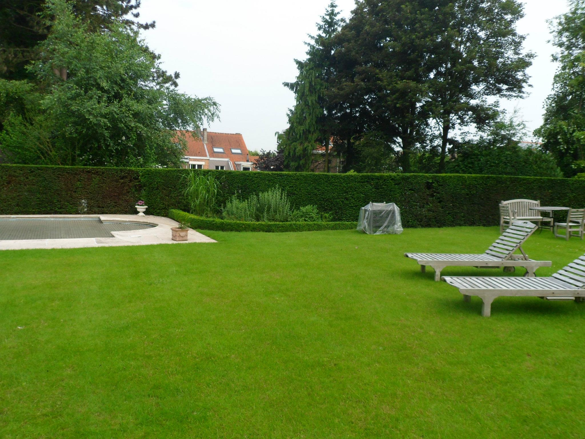
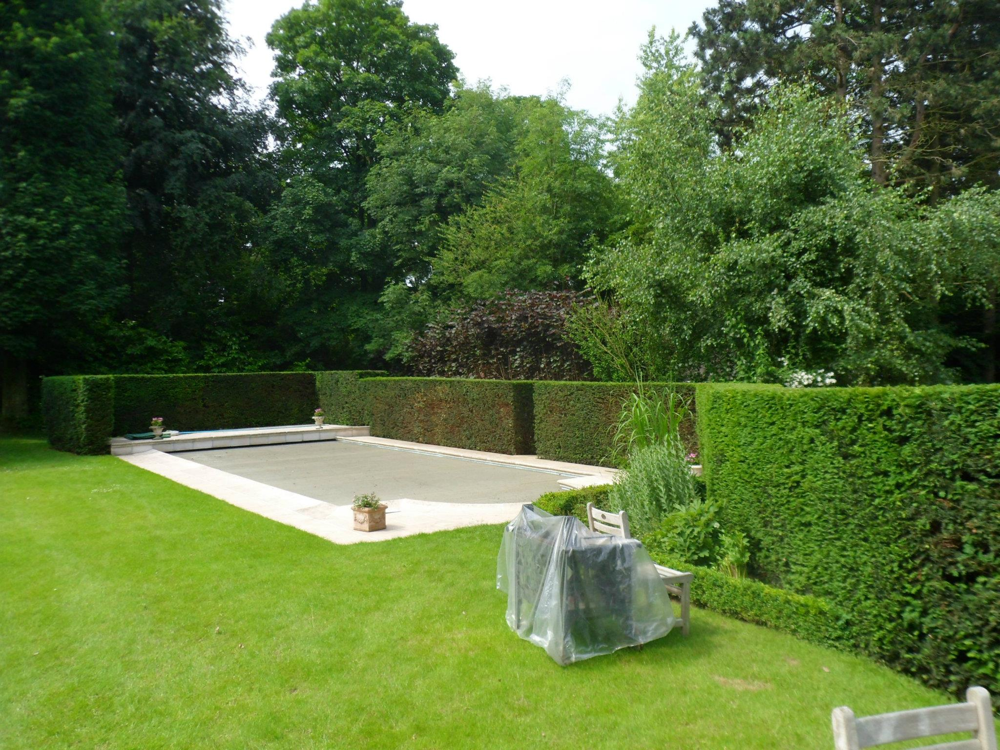
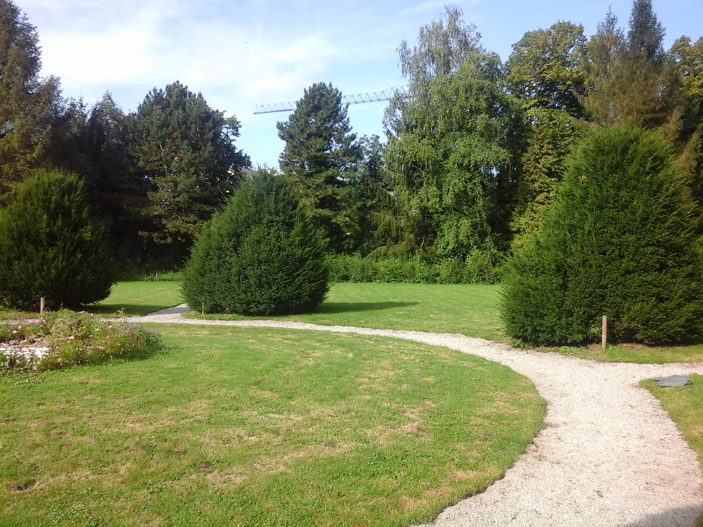
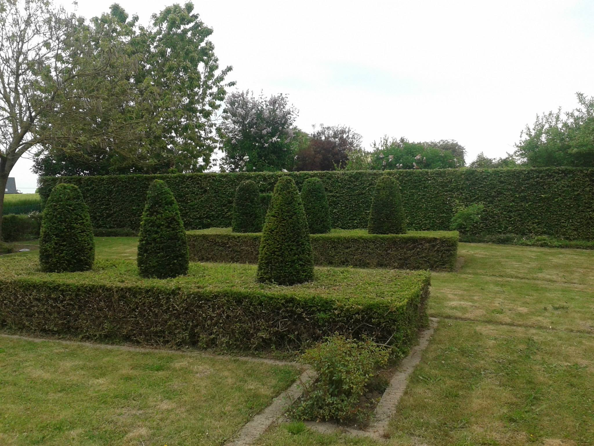
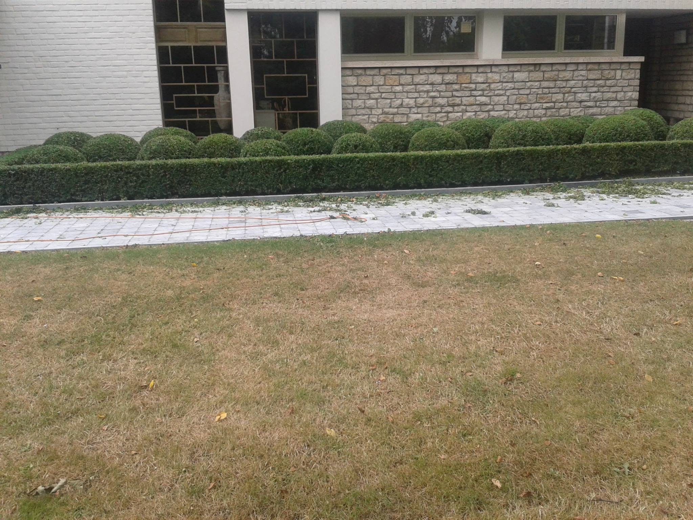
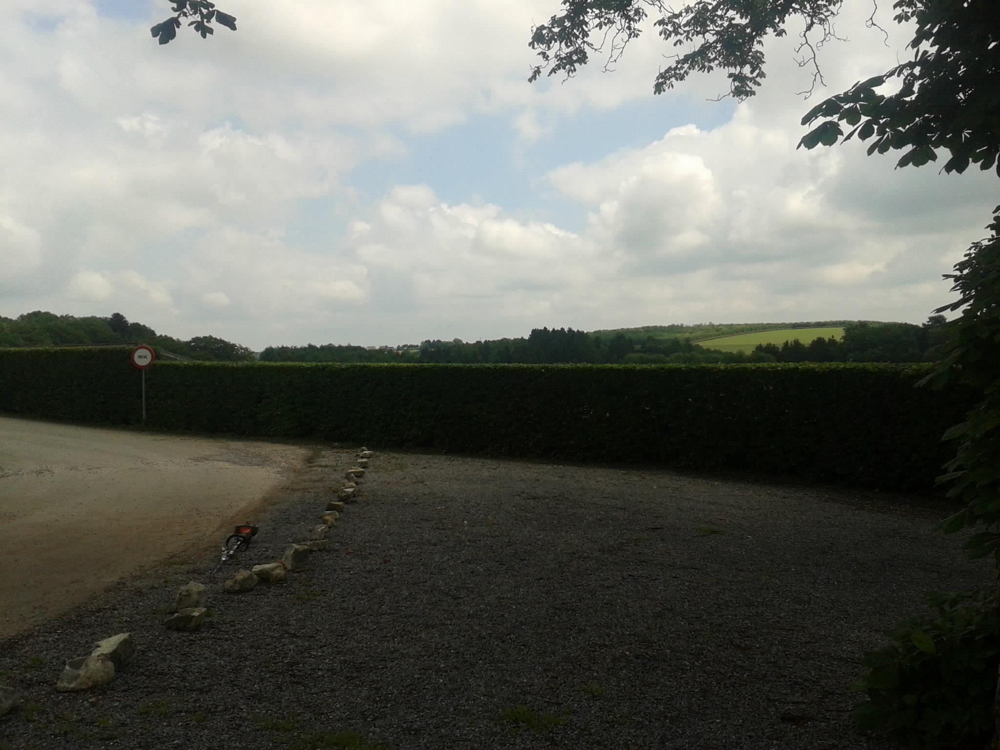
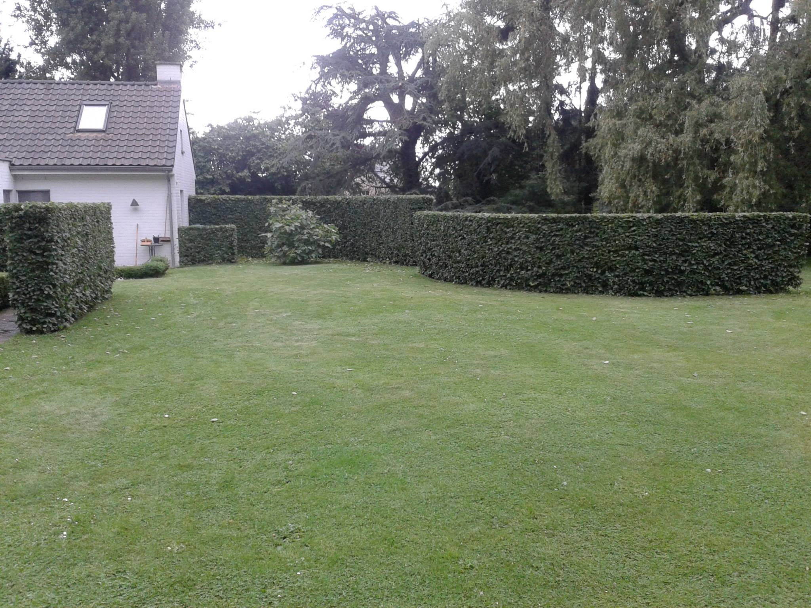
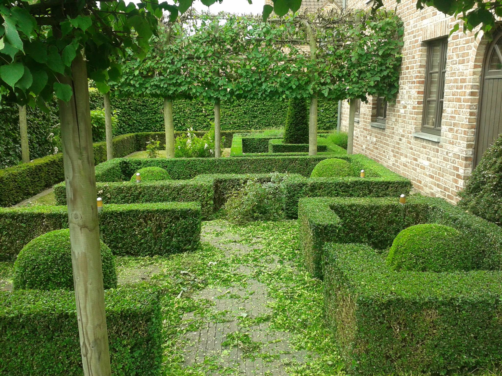

Profil
Jardinier disposant de plus de 15 années d’expérience en entretien et aménagement complet
d’espaces verts privés et publics.
Habitué à travailler de manière autonome comme en équipe, avec une bonne capacité d’organisation
sur chantier et une exécution efficace des travaux.
Maîtrise des travaux d’entretien courants, utilisation quotidienne du matériel professionnel
ainsi que de son
entretien.
Capable d’assurer un travail efficace, soigné et constant.
Ouvrier fiable, polyvalent, opérationnel rapidement, habitué aux journées qui commencent tôt
(6h), capable d’intégrer une équipe ou de travailler de manière autonome selon l’organisation du
chantier.
Compétences
- Création de pelouse de A à Z.
- Pose de gazon rouleau.
- Semis des engrais, anti-mousse,..
- Tontes (manuelle et tracteur).
- Tontes terrain de golf.
- Débroussaillage.
- Scarification
- Tailles de haies / Arbres fruitiers / Arbustes / Rabattages
- Petits élagages / Abattages / Broyage
- Plantations.
- Création/entretien de parterres
- Création et entretien de potager
- Utilisation de machines attelés (tracteurs).
- Affûtage des tailles haies et tronçonneuses.
- Petites mécaniques
- Pulvérisations (pas de licence)
- Pose de clôture.
- Pavages
- Pose de bordures
Expérience
2012 - 2021
Jardinier qualifié
2009 - 2010
Jardinier qualifié
2006 - 2008
Jardinier en apprentissage
Réalisations










